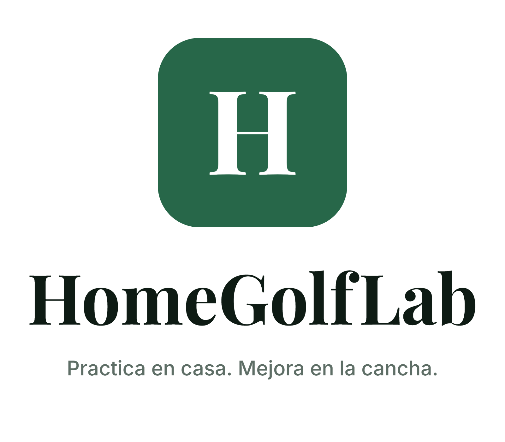
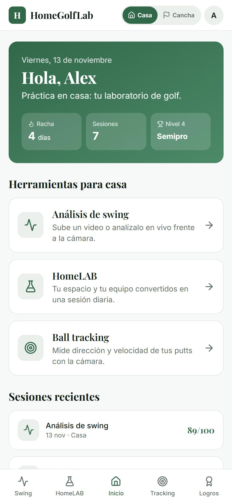
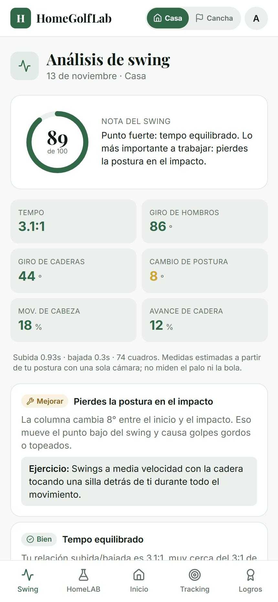
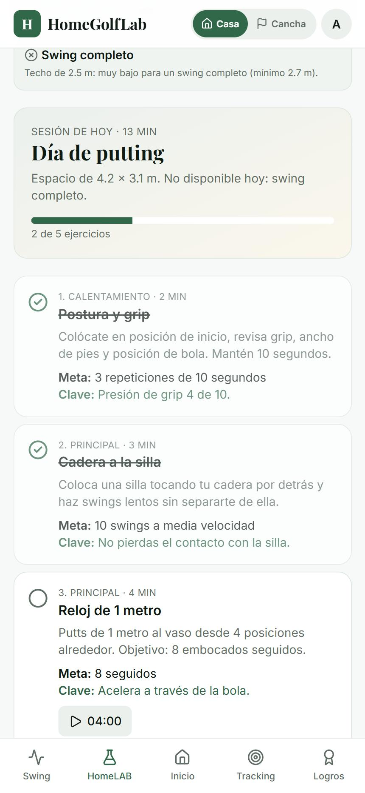
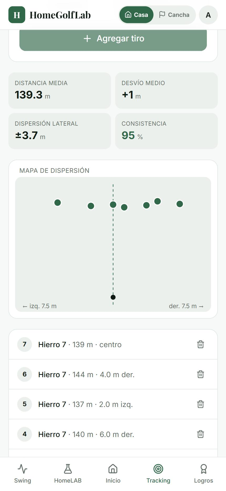
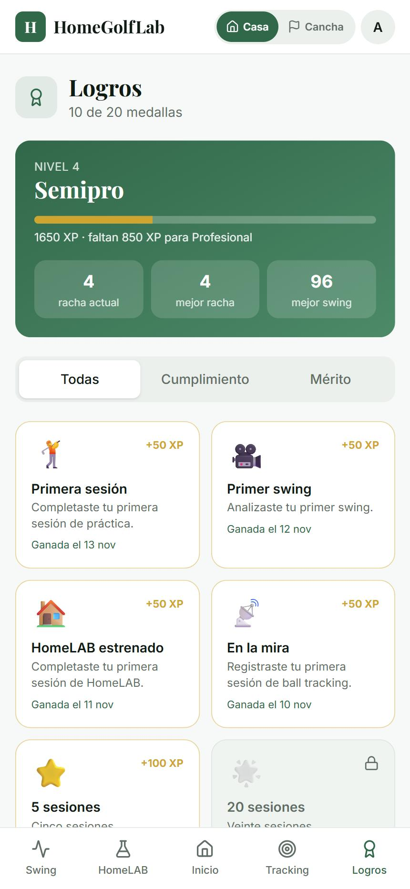

Todo lo que necesita una persona o una IA para crear piezas de HomeGolfLab que se vean y suenen como la app: identidad, logo, color, tipografía, estilo visual, tono, mensajes y reglas.
Súbelo como documento del Brand Kit. Los logos están en la carpeta logos/ y las capturas reales de la app en capturas/. El archivo campos-para-el-brand-kit.md trae los mismos datos listos para pegar en cada campo del kit (colores, fuentes, reglas).
| Elemento | Definición |
|---|---|
| Nombre | HomeGolfLab. Una sola palabra, con H, G y L en mayúscula. Nunca “Home Golf Lab”, “HomeGolf LAB” ni “HGL” en piezas públicas. |
| Qué es | Una app móvil (iOS y Android) que convierte el teléfono en un laboratorio de práctica de golf, en casa y en la cancha. |
| Para quién | Golfistas amateur y principiantes de Latinoamérica que quieren mejorar sin depender de una cancha, un instructor ni equipo caro. |
| Promesa | Practica con lo que ya tienes y entiende qué corregir. Sin sensores, sin equipo extra. |
| Lema | Practica en casa. Mejora en la cancha. |
| Idioma | Español latino neutro. Tuteo (“tu swing”, “toma una foto”). |
| Personalidad | Un buen coach: claro, cercano, exigente sin ser duro. Serio con los datos, cálido con la persona. |
Dos modos: Casa y Cancha. Modelo: gratis con anuncios en el tracking; Premium sin anuncios y con análisis de swing en vivo.
El símbolo es una H serif blanca dentro de un cuadrado verde de esquinas redondeadas (radio del 22 % del lado). El nombre va en Playfair Display Bold.

Apilado con lema#276749 a #428A68, en diagonal de arriba-izquierda a abajo-derecha.Playfair Display · 600 y 700
Títulos, cifras grandes y el nombre de la marca. Da el tono clásico del golf.
Inter · 400, 500, 600 y 700
Textos, botones, etiquetas y subtítulos de video. Limpia y muy legible en pantalla.
Cuando una pieza muestra la app, debe parecerse a estas pantallas reales. Las cifras que aparecen son datos de ejemplo.

Inicio
Análisis de swing
HomeLAB
Ball tracking
Logros| Formato | Tamaño | Uso |
|---|---|---|
| Vertical 9:16 | 1080 × 1920 | Reels, TikTok, Shorts, historias. Formato principal. |
| Cuadrado 1:1 | 1080 × 1080 | Publicaciones de Instagram y Facebook. |
| Retrato 4:5 | 1080 × 1350 | Publicaciones y carruseles. |
| Horizontal 16:9 | 1920 × 1080 | YouTube, presentaciones y pitch. |
En vertical, deja libres 250 px arriba y 350 px abajo: ahí van los controles de cada red.
| Tema | Mensaje |
|---|---|
| Lema | Practica en casa. Mejora en la cancha. |
| Marca | Tu laboratorio de golf, en tu teléfono. |
| Swing | Analiza tu swing y te dice qué corregir. |
| HomeLAB | Toma una foto. La app arma tu práctica. |
| Tracking | Mide tus putts. Mira tu progreso. |
| Logros | Cada sesión cuenta. |
| Acceso | Sin cancha, sin coach, sin equipo caro. |
| Llamado a la acción | “Empieza a practicar hoy.” Mientras la app no esté en las tiendas: “Muy pronto en iOS y Android.” |
#276749 como color dominante y dorado #D4A735 solo como acento.Marca: HomeGolfLab, app móvil de práctica de golf en casa y en la cancha, para golfistas amateur de Latinoamérica. Estilo: motion graphics moderno y limpio; un teléfono como protagonista con la interfaz de la app en pantalla; tarjetas blancas de esquinas redondeadas, mucho aire, íconos de línea. Colores: verde golf #276749 dominante, dorado #D4A735 solo como acento, fondo claro #F6F9F7, texto #0E1B14. Degradado de marca de #276749 a #428A68. Tipografía: títulos en Playfair Display Bold; textos en Inter. Personas: golfistas amateur reales en salas, patios o un driving range, con luz natural y equipo sencillo. Sin lujo ni profesionales reconocibles. Texto en pantalla: español latino neutro, frases de menos de 8 palabras. Voz: española latina neutra, cálida y segura, de coach cercano. Cierre: logo oficial de HomeGolfLab sobre el degradado verde y el lema "Practica en casa. Mejora en la cancha." No incluir: cifras de usuarios o ventas, marcas ajenas, insignias de tiendas, texto en inglés, estética de neón o de videojuego.
| Carpeta | Contenido |
|---|---|
logos/ | Seis PNG: horizontal, apilado con lema, ícono, ícono invertido, horizontal blanco transparente y horizontal con fondo verde. |
capturas/ | Cinco pantallas reales de la app en vertical (860 × 1864), con datos de ejemplo. |
campos-para-el-brand-kit.md | Colores, fuentes y reglas listos para pegar en los campos del Brand Kit. |